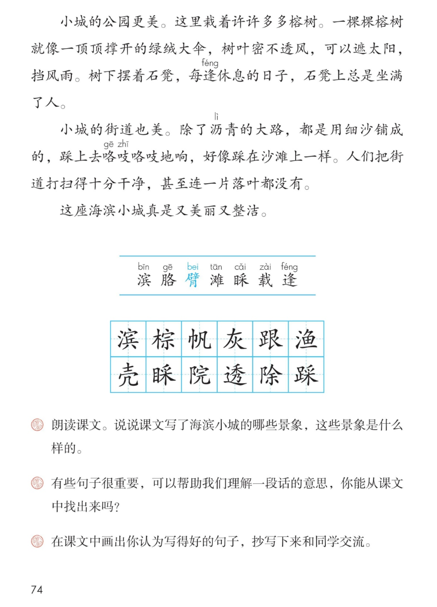

×
🔊 手机听不到声音怎么办？
① 先把手机
媒体音量调大 ，确认没开静音、没连蓝牙耳机；在微信里打开的，点右上角「⋯ → 用浏览器打开」。
② 还是没声音？到应用商店免费下载
Microsoft Edge 浏览器 （它自带朗读发声），用它打开本页面就能出声。
③ 换了 Edge 仍然没声音，说明这部手机的
硬件/系统不支持 网页朗读（多为老旧机型）；近几年买的新手机一般都能正常播放。
→ 打开声音自检
🏖️ 第 17 课《海滨小城》· 有声图文带读
统编版语文 · 第六单元·阅读 · 课本 P73~74 · 素养升级版（对标 2022 课标第二学段）
课文 7 个自然段
素养目标 4
会认字 7
会写字 12
听写词 12
关键语句探究 6 卡
深入理解 8 题
本课本领 找关键句·理解一段话
🎧 这样学（可随时点任意一句、一个字、一个词单独听）： ① 听读课文 ——一句一句读，读到哪一句哪一句发光；边读边找：先写海，再写城，每段的关键句是哪一句？② 学字词 ——7 个会认字、12 个会写字，点一个读一个。③ 词语·听写 ——听写 12 个课文词（读两遍→你写→报答案→听示范句），再听 4 组近义词辨析。④ 深入理解 ——8 道题（认知 / 理解 / 运用 / 拓展），先想后看。⑤ 小导游介绍 ——跟着小导游游海滨小城，再说说课文写了哪些景象、是什么样的。🌟 本单元任务：借助关键语句理解一段话的意思；学习围绕一个意思把一段话写清楚！
📌 本单元语文要素 ——单元导语（P69 照录）：祖国，我爱你。我爱你壮美的山河，我爱你每一寸土地。 ；要点：饱览大好河山，感受祖国之美 ；借助关键语句理解一段话的意思 ；学习围绕一个意思把一段话写清楚 。
🀄 文化自信
🀄 文化自信
漫步祖国的海滨小城：浩瀚的大海、金色的早晨、绿绒大伞般的榕树——山海之美就在身边，值得骄傲和珍惜。
🗣 语言运用
🗣 语言运用
认识 7 个生字，会写 12 个字；积累浩瀚、喧闹、密不透风等词语，学着找出并运用关键句。
💡 思维能力
💡 思维能力
借助关键语句理解一段话的意思：先找关键句，再看整段怎么围绕它写；还要理清先写海、再写城的顺序。
🎨 审美创造
🎨 审美创造
有感情地朗读课文，想象海滨小城的美景；画出你认为写得好的句子，抄写下来和同学交流。
点段前的 ①②③ 听整段
🔁 跟读模式：关
👁 隐藏注音（自测用）
字卡上的拼音标的是本课要认的字，读音来自课本生字表
🎤 朗读要求（老师标准） 不添字、不漏字 ；有感情地朗读课文 ，读出对海滨小城的喜爱和赞美 ；读清楚 ，每段的关键句读响亮 ；读出节奏 。
🤫 默读小提示（带着关键句任务默读） 听读 ——点句子听老师读；第二步 默读 ——不出声、不指读，一边读一边想：先写海、再写城，每个自然段围绕哪一句话在写？ 把关键句画下来；第三步 朗读 ——有感情地朗读课文 ，读出对海滨小城的喜爱和赞美。
①
这是一座海滨小城。
人们走到街道尽头，就可以看见浩瀚的大海。
天是蓝的，海也是蓝的。
海天交界的水平线上，棕色的机帆船和银色的军舰来来往往。
天空飞翔着白色的、灰色的海鸥，还飘着跟海鸥一样颜色的云朵。
📌 这一段讲：这是一座海滨小城：街道尽头就能看见浩瀚的大海，海天一色，机帆船和军舰来来往往，海鸥和云朵飞在天上。
②
早晨，机帆船、军舰、海鸥、云朵，都被朝阳镀上了一层金黄色。
帆船上的渔民，军舰上的战士，他们的脸和胳臂也镀上了一层金黄色。
📌 这一段讲：早晨，机帆船、军舰、海鸥、云朵，都被朝阳镀上了一层金黄色；渔民和战士的脸和胳臂也镀上了金黄色。
③
海边是一片沙滩，沙滩上遍地是各种颜色、各种花纹的贝壳。
这里的孩子见得多了，都不去理睬这些贝壳，贝壳只好寂寞地躺在那里。
远处响起了汽笛声，那是出海捕鱼的船队回来了。
船上满载着银光闪闪的鱼，还有青色的虾和蟹、金黄色的海螺。
船队一靠岸，海滩上就喧闹起来。
📌 这一段讲：沙滩上遍地是各种颜色、各种花纹的贝壳，孩子们见得多了不去理睬；船队一靠岸，满载着鱼虾蟹螺，海滩上就喧闹起来。
④
小城里每一个庭院都栽了很多树，有桉树、椰子树、橄榄树、凤凰树，还有许多不知名的树。
初夏，桉树叶子散发出来的香味，飘得满街满院都是。
凤凰树开了花，开得那么热闹，小城好像笼罩在一片片红云中。
📌 这一段讲：小城里每一个庭院都栽了很多树：初夏桉树叶子的香味飘得满街满院都是，凤凰树开了花，小城好像笼罩在一片片红云中。
⑤
小城的公园更美。
这里栽着许许多多榕树。
一棵棵榕树就像一顶顶撑开的绿绒大伞，树叶密不透风，可以遮太阳，挡风雨。
树下摆着石凳，每逢休息的日子，石凳上总是坐满了人。
📌 这一段讲：小城的公园更美（关键句）：许许多多榕树像撑开的绿绒大伞，树叶密不透风，树下石凳上总是坐满了人。
⑥
小城的街道也美。
除了沥青的大路，都是用细沙铺成的，踩上去咯吱咯吱地响，好像踩在沙滩上一样。
人们把街道打扫得十分干净，甚至连一片落叶都没有。
📌 这一段讲：小城的街道也美（关键句）：除了沥青大路都是细沙铺成的，踩上去咯吱咯吱响；街道打扫得十分干净，连一片落叶都没有。
⑦
这座海滨小城真是又美丽又整洁。
📌 这一段讲：这座海滨小城真是又美丽又整洁（全文总结句）。
🤔 想一想（点我可跳过）
双页宽图自动占整行

第 74 页 · 认字 · 写字 · 课后练习
📖 人教版《语文》三年级上册 · 课本第 73~74 页 · 图片仅供个人学习，版权归人民教育出版社所有
📚 注释① 本文作者林遐 （1921—1970），选作课文时有改动。
点一个字，听读音、词语和在课文里的句子
结构、部首、笔画与书写提示为通用规范，供参考，以教材和老师的指导为准
滨bīn
海滨
左右 · 氵 · 13画
三点水呈弧形，右边宾字宝盖要宽，下面八字底撇点分开，稳稳托住。
棕zōng
棕色
左右 · 木 · 12画
木字旁末笔变点写窄，右边宗字宝盖宽，示字底横钩左右对称。
帆fān
机帆船
左右 · 巾 · 6画
巾字旁窄长，右边凡字横折弯钩要有力，点写在右上。
灰huī
灰色
半包围 · 火 · 6画
横撇写舒展，里面火字撇捺对称，像两簇小火苗。
跟gēn
跟海鸥一样
左右 · 足 · 13画
足字旁末笔变提写窄，右边艮字竖提有力，最后一笔捺变点。
渔yú
渔民
左右 · 氵 · 11画
三点水呈弧形，右边鱼字田要写扁，末横要长，托住上面。
壳ké
贝壳
上下 · 士 · 7画
上面士字写扁，横长竖正，下面几字横折弯钩要托住上面。
睬cǎi
理睬
左右 · 目 · 13画
目字旁窄长，右边采字爪字头写扁，木字撇捺要舒展。
院yuàn
满街满院
左右 · 阝 · 9画
横撇弯钩要小，竖挺直；右边完字宝盖宽，竖弯钩要舒展。
透tòu
密不透风
半包围 · 辶 · 10画
上面秀字撇捺伸展，走之底横折折撇要小，捺要长、托住上面。
除chú
除了
左右 · 阝 · 9画
双耳旁和院字写法相同，右边余字人字头撇捺舒展，下面写得紧凑。
踩cǎi
踩上去
左右 · 足 · 15画
足字旁末笔变提，右边采字上扁下展；和睬字比一比，一个是目字旁，一个是足字旁。
点一行，听读这一组词语
滨 海滨 湖滨 滨河路
滩 沙滩 海滩 滩涂
渔 渔民 渔船 渔业
院 庭院 满院 院子
读两遍 → 你在纸上写 → 报答案 → 听示范句
准备听写 · 共 12 个词
○ ○ ○
点下面的「开始听写」，听到一个词就写一个词。
▶ 开始听写
🔁 再读一遍
👁 看答案
点词听读，点句子听示范句，再自己说一句
1 海滨 课文词
示范句：这是一座海滨小城。
✏️ 我也能说：这是一座什么样的城。
2 棕色 课文词
示范句：棕色的机帆船和银色的军舰来来往往。
✏️ 我也能说：什么样的机帆船来来往往。
3 机帆船 课文词
示范句：海天交界的水平线上，棕色的机帆船和银色的军舰来来往往。
✏️ 我也能说：什么船在海天交界的水平线上来来往往。
4 灰色 课文词
示范句：天空飞翔着白色的、灰色的海鸥。
✏️ 我也能说：天空飞翔着什么颜色的海鸥。
5 跟着 课文词
示范句：还飘着跟海鸥一样颜色的云朵。
✏️ 我也能说：云朵跟什么颜色一样。
6 渔民 课文词
示范句：帆船上的渔民，军舰上的战士。
✏️ 我也能说：帆船上有什么人。
7 贝壳 课文词
示范句：沙滩上遍地是各种颜色、各种花纹的贝壳。
✏️ 我也能说：沙滩上遍地是什么。
8 理睬 课文词
示范句：这里的孩子见得多了，都不去理睬这些贝壳。
✏️ 我也能说：孩子们都不去怎样这些贝壳。
9 满院 课文词
示范句：桉树叶子散发出来的香味，飘得满街满院都是。
✏️ 我也能说：香味飘到哪里都是。
10 密不透风 课文词
示范句：树叶密不透风，可以遮太阳，挡风雨。
✏️ 我也能说：榕树的树叶怎么样。
11 除了 课文词
示范句：除了沥青的大路，都是用细沙铺成的。
✏️ 我也能说：什么样的路都是用细沙铺成的。
12 踩上去 课文词
示范句：踩上去咯吱咯吱地响，好像踩在沙滩上一样。
✏️ 我也能说：踩上去怎么样。
相同点 / 不一样在哪 / 各造一句
浩瀚 — 辽阔
相同：都表示广大、无边无际。
不一样：浩瀚 多形容大海、星空等水势或景象广大；辽阔 多形容地域、天地宽广。
浩瀚：人们走到街道尽头，就可以看见浩瀚的大海。
喧闹 — 热闹
相同：都表示气氛活跃、声音多。
不一样：喧闹 偏重声音嘈杂、吵吵嚷嚷；热闹 偏重景象兴旺、气氛欢快。
喧闹：船队一靠岸，海滩上就喧闹起来。
寂寞 — 孤单
相同：都表示冷清、没人陪伴。
不一样：寂寞 偏重清静无聊、无人理睬；孤单 偏重单独一个、没有同伴。
寂寞：贝壳只好寂寞地躺在那里。
整洁 — 干净
相同：都表示不脏、清爽。
不一样：整洁 偏重整齐又干净；干净 偏重没有尘土和污垢。
整洁：这座海滨小城真是又美丽又整洁。
海滨的景象 浩瀚的大海 镀上金黄 寂寞的贝壳 喧闹的海滩
小城的美 满街满院 绿绒大伞 一片片红云 又美丽又整洁
关键句的样子 小城的公园更美 小城的街道也美
拟声词 咯吱咯吱
点一张卡，听这条阅读线索
上一课我们认识了围绕关键句写 ，这一课要学借助关键语句理解一段话的意思 ：六张卡片，看海滨小城的关键句藏在哪里、怎么帮我们读懂一段话。
🗺 先写海，再写城
课文先写海滨（大海、早晨、沙滩），再写小城（庭院、公园、街道），最后总结又美丽又整洁——按地点顺序，景象一处一处写清楚。
🔑 每段都有关键句
小城的公园更美。小城的街道也美。——第四到六段的第一句就是关键句，一段的意思抓住它就明白了。
🌊 找一找第一段的关键句
人们走到街道尽头，就可以看见浩瀚的大海。——后面的蓝天、海鸥、帆船，都在写街道尽头看见的海。
🌅 一个镀字写活了早晨
朝阳镀上了一层金黄色——机帆船、军舰、海鸥、云朵，连渔民和战士都镀上了金色，一个镀字让早晨的海面闪闪发光。
🐚 把贝壳当成人来写
贝壳只好寂寞地躺在那里——孩子们见得多了不去理睬，贝壳就像被人冷落了一样，寂寞这个词用得妙。
🌳 比喻让榕树活起来
一棵棵榕树就像一顶顶撑开的绿绒大伞——又大又密又绿，还能遮太阳、挡风雨，这就是课后题③里值得抄的好句。
标「答案不唯一」的题，说得有道理都对
认知 海滨的天空和大海是什么样子的？看解析
🤔 想一想
解析：
天是蓝的，海也是蓝的。海天交界的水平线上，棕色的机帆船和银色的军舰来来往往；天空飞翔着白色的、灰色的海鸥，还飘着跟海鸥一样颜色的云朵。
🌈 答案不唯一，说得有道理都对
认知 沙滩上遍地是什么？孩子们为什么不去理睬这些贝壳？看解析
🤔 想一想
解析：
沙滩上遍地是各种颜色、各种花纹的贝壳。因为这里的孩子见得多了，所以都不去理睬，贝壳只好寂寞地躺在那里。
🌈 答案不唯一，说得有道理都对
理解 有些句子很重要，可以帮助我们理解一段话的意思，你能从课文中找出来吗？（课后题②照录）看解析
🤔 想一想
解析：
比如：人们走到街道尽头，就可以看见浩瀚的大海；小城里每一个庭院都栽了很多树；小城的公园更美；小城的街道也美——这些句子就是各段的关键句，读懂它，整段的意思就明白了。🌈 找出一两句并说清理由都对。
🌈 答案不唯一，说得有道理都对
理解 一棵棵榕树就像一顶顶撑开的绿绒大伞。——这句好在哪里？看解析
🤔 想一想
解析：
把榕树比作绿绒大伞：一棵棵、一顶顶写出了榕树多；撑开的绿绒大伞写出了树冠又大又圆又绿——所以能密不透风，遮太阳、挡风雨。
🌈 答案不唯一，说得有道理都对
理解 小城好像笼罩在一片片红云中。——红云指什么？这样写好在哪里？看解析
🤔 想一想
解析：
红云指的是大片盛开的凤凰花。把凤凰花比作红云，写出了花开得多、开得旺，小城像披上了红纱，美丽又梦幻。
🌈 答案不唯一，说得有道理都对
运用 朗读课文。说说课文写了海滨小城的哪些景象，这些景象是什么样的。（课后题①照录）看解析
🤔 想一想
解析：
先写海滨：浩瀚的大海、海天一色、机帆船军舰来来往往、海鸥飞翔；早晨一切都镀上金黄色；沙滩上遍地贝壳，船队靠岸后喧闹起来。再写小城：庭院栽满树、满街满院飘香；公园里榕树像绿绒大伞；街道干净，细沙路咯吱响。最后总结：又美丽又整洁。🌈 按先海后城的顺序说，说出一两处并讲清样子都对。
🌈 答案不唯一，说得有道理都对
运用 在课文中画出你认为写得好的句子，抄写下来和同学交流。（课后题③照录）看解析
🤔 想一想
解析：
示范：一棵棵榕树就像一顶顶撑开的绿绒大伞，树叶密不透风。——这句话把榕树比作大伞，让我一下子看到榕树的样子。🌈 你也可以选镀上金黄色、寂寞地躺在那里、一片片红云等句子，说清好在哪里。
🌈 答案不唯一，说得有道理都对
拓展 课文第④⑤⑥自然段的第一句和整段是什么关系？结尾又起了什么作用？看解析
🤔 想一想
解析：
第④段围绕每一个庭院都栽了很多树写，第⑤段围绕小城的公园更美写，第⑥段围绕小城的街道也美写——第一句就是关键句，整段都围着它写。结尾又美丽又整洁总结全文，把海和城连在一起。🌈 先找关键句，再看整段怎么围绕它写。
🌈 答案不唯一，说得有道理都对
💬 想象支架：先 海滨的大门——街道尽头见大海 → 再 金色的早晨 → 接着 喧闹的沙滩 → 然后 庭院与公园 → 最后 干净的街道，又美丽又整洁。轮到你了：说说课文写了海滨小城的哪些景象，这些景象是什么样的（正是课后题①）。
点一个角色，听他（她）的介绍
🎭 旁白
这是一座海滨小城。人们走到街道尽头，就可以看见浩瀚的大海。天是蓝的，海也是蓝的。海天交界的水平线上，棕色的机帆船和银色的军舰来来往往。天空飞翔着白色的、灰色的海鸥，还飘着跟海鸥一样颜色的云朵。 / 这座海滨小城真是又美丽又整洁。
💬 小导游要读出介绍和自豪 ：关键句读响亮，颜色词、叠词读出节奏
🎭 小导游·早晨
早晨，机帆船、军舰、海鸥、云朵，都被朝阳镀上了一层金黄色。帆船上的渔民，军舰上的战士，他们的脸和胳臂也镀上了一层金黄色。
💬 小导游要读出介绍和自豪 ：关键句读响亮，颜色词、叠词读出节奏
🎭 小导游·沙滩
海边是一片沙滩，沙滩上遍地是各种颜色、各种花纹的贝壳。这里的孩子见得多了，都不去理睬这些贝壳，贝壳只好寂寞地躺在那里。 / 远处响起了汽笛声，那是出海捕鱼的船队回来了。船上满载着银光闪闪的鱼，还有青色的虾和蟹、金黄色的海螺。船队一靠岸，海滩上就喧闹起来。
💬 小导游要读出介绍和自豪 ：关键句读响亮，颜色词、叠词读出节奏
🎭 小导游·庭院
小城里每一个庭院都栽了很多树，有桉树、椰子树、橄榄树、凤凰树，还有许多不知名的树。初夏，桉树叶子散发出来的香味，飘得满街满院都是。 / 凤凰树开了花，开得那么热闹，小城好像笼罩在一片片红云中。
💬 小导游要读出介绍和自豪 ：关键句读响亮，颜色词、叠词读出节奏
🎭 小导游·公园街道
小城的公园更美。这里栽着许许多多榕树。一棵棵榕树就像一顶顶撑开的绿绒大伞，树叶密不透风，可以遮太阳，挡风雨。树下摆着石凳，每逢休息的日子，石凳上总是坐满了人。 / 小城的街道也美。除了沥青的大路，都是用细沙铺成的，踩上去咯吱咯吱地响，好像踩在沙滩上一样。人们把街道打扫得十分干净，甚至连一片落叶都没有。
💬 小导游要读出介绍和自豪 ：关键句读响亮，颜色词、叠词读出节奏
每题给自己打 1~3 颗星
1. 我能正确认读 7 个会认字，规范书写 12 个会写字。 ☆ ☆ ☆
2. 我能有感情地朗读课文，读出对海滨小城的喜爱和赞美。 ☆ ☆ ☆
3. 我能找出每段的关键句，借助它说出一段话的意思。 ☆ ☆ ☆
4. 我能按先写海、再写城的顺序，说出课文写了哪些景象、是什么样的。 ☆ ☆ ☆
5. 我能画出写得好的句子，抄写下来并说清好在哪里。 ☆ ☆ ☆
✍️ 摘抄交流 ：在课文中画出你认为写得好的句子 ，抄写下来 和同学交流。读一读课文 ：把你觉得写得好的句子画下来；抄在摘抄本上 ：字要写工整；想一想好在哪里 ：是用了比喻，还是用词特别妙？再和同学交流。